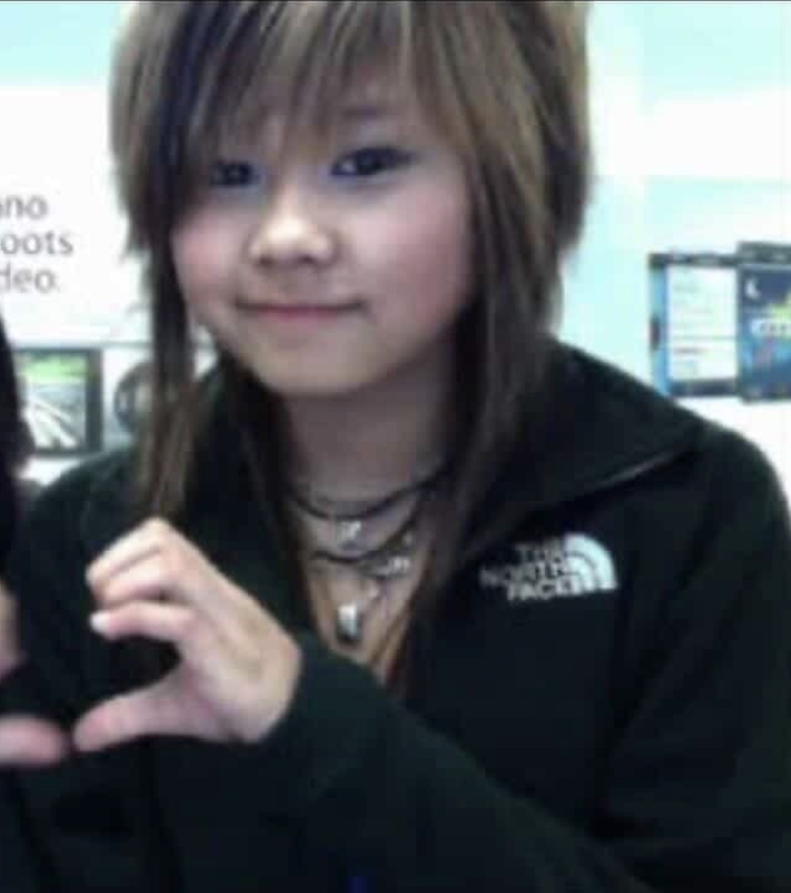

As an Asian, I've always struggled with the notion of rigid structure growing up. Culturally, everyone seems to think we're a race fixated on math, piano, and scoring a good bargain on just about anything–bruised fruits, expired yogurt, an extra eight miles of driving to fill up at a station three cents cheaper. And don't get me wrong, we earned that reputation through generations of conditioning. I am certainly a casualty of cosmetology school $5.99 haircuts, administered by Koreans operating out of a unit above a Goodwill in our neighborhood strip mall.
"Even with a $4 tip, you can get a perfectly good haircut for under ten dollars," my dad would say, turning around from the driver's seat to address a terrified 12-year-old me. In his view, his 60% tip would elevate him to sainthood and single-handedly break the unsuspecting cosmetology student out of poverty. He didn't have to tip that high, but it made him feel good to be generous– which is, I have come to understand, the entire engine of charitable giving. The generosity was unfortunately lost on me, as I never once had my hair cut by someone with a full-fledged cosmetology license during my entire childhood. I endured 4th grade with uneven bangs. During my emo phase in 8th grade, a cosmetology student gave me a bowl cut with two rat tails hanging out and told me, by way of consolation, "If you teased your hair, you'd look like one of those girls on Tumblr with heavy eyeliner and Boobies rubber wristbands from Hot Topic." This was meant to be encouraging. It was delivered, I should mention, after she had already finished. I cried. It would take until halfway through high school to grow my hair back out to anything resembling a feminine length.

I was 10 years old every time we went to the $12 Chinese all-you-can-eat buffet, and it must have been a small miracle for the hostess at Hong Kong Pearl Buffet to witness me grow five inches over four years while inexplicably remaining 10 years old and not a day older. Eventually, the restaurant stopped asking my dad for my age and quietly began charging me as an adult, and that day was the last time we ever went back. I was 5'7, in high school, wearing makeup over hormonal acne, but none of this stopped my father from feeling personally cheated by the Hong Kong Pearl staff when they correctly assumed I was not 10 years of age or younger.
With all this being said, it should come as no surprise when my father started stealing my weed for personal use. I was, nonetheless, shocked. I was 16 when my dad called the cops on me for smoking a joint in my room. In my defense, I had been told he wouldn't be home until evening, so I'd given myself what I believed to be ample time to air the place out. But lo and behold, he came home for lunch and threw a gasket when he discovered me stoned out of my mind, knee-deep in a box of La Madeleine cakes from Costco. He called the cops! I attempted to flee, but I quickly realized I was too high to drive and, on closer inspection, too high to make any meaningful progress on foot either. I eventually said "fuck it" and sat on the front porch to wait for the police, which is, I would later learn, the posture of a person who has already begun negotiating with the universe.
Unbeknownst to me, during this interval, my dad had gone through my room and separated out a little more than half of my ounce of weed and kept it for himself. When the police arrived, he emerged from my bedroom holding the remaining half ounce and handed it over for inspection like a man presenting a casserole. I was, clearly, not stupid enough to deny what it was. The case seemed open and shut, but the officers let me off with a stern scared-straightesque warning and confiscated the half ounce because it dawned on them that this was simply a father trying to discipline his child. They left visibly moved. I was less so.
I found out through my mother that, the same week he called the cops on me, my dad had suddenly come into possession of some weed and was now hanging out at his buddies' house drinking beer and smoking my pot. He had never smoked before and, in the aftermath, did not feel comfortable driving home–which was the only reason this information was divulged to my mother at all. In turn, a frustrated and exhausted mom turned around and told me everything she'd been forced to absorb that evening. This was the moment it clicked for me that my dad had not emptied out half my ounce to spare me a distribution charge. Hell, he almost certainly didn't know that, in the state of Virginia, being caught with more than half an ounce is a felony distribution. Now that I think about it, he definitely did not know that. Why would he? My father is a man whose engagement with the law has historically been limited to citizen's-arresting his own daughter.
My dad stole my weed, called the cops on me, enrolled me in marijuana prevention therapy, and smoked the stolen goods with his friends. I was pissed, but I was also a minor in need of a roof and food, so I had no choice but to lick my wounds and offer something in the general spirit of forgive-and-forget.
Fast forward five years. My father visits my apartment in DC, where I was living at the time, to fix my broken sink. I was a junior in college, living life on my own terms, though I admit I did not shy away from my dad's handiwork around the apartment. (My parents lived out in the suburbs, so it was never much of a hassle for them to swing by, and I had calculated, correctly, that the optics of a father fixing his daughter's plumbing would prevent any deeper inspection of her life.) I think all the work around the apartment gave my dad a sense of pride, like he was still needed by his little girl, and who am I to deny him that? At least, that's what I thought.
One day he came over on a Monday afternoon. I had thrown a big party over the weekend, mulled my hangover on Sunday, and rushed off to my history class on Monday morning, which meant the apartment was still in a state of empty beer bottles, and several uncleared lines of cocaine on the coffee table. As I unlocked the door to let the two of us in, my dad immediately pointed at the coke and asked if it was, in fact, cocaine. I am not one to lie to my father, especially as a grown adult under her own roof. I was not scared this time. My dad could judge me all he wanted, but if he judged poorly, that would only be a reflection of his skills as a parent, so I was not in any way concerned about my grade on his scale.
He said nothing more. He quickly fixed the garbage disposal by resetting it, then yelled across the apartment that he was heading out. I was in the bathroom changing into my pajamas, so I called back "alright" and heard the door shut behind him. When I walked into the living room, something felt off. I knew it almost immediately, so I looked out the window and saw my dad running to his car. Sprinting. I scanned the room and, in a single glance, registered that my $250 8-ball was gone.
I sprinted out the door and down the apartment steps to chase after the thief for a heated showdown, thinking only: not this shit again. Finally, three blocks down, I caught up with my dad pulling out of his parallel parking spot, which I immediately blocked with all the force I could put behind me. I motioned for him to roll down his window and demanded my coke back.
"The guys are going on a boat trip this weekend," he said, "and it would be nice, I thought, if I could bring them a little something fun. Once. Just once."
For a moment, I almost felt sorry for him. He was, in the final analysis, just a guy trying to impress his friends by showing them a good time, with drugs. We were not, I realized, so different after all. The fact that I'd now have to re-engage my dealer for another pickup was annoying, but for my dad, I supposed I could endure the inconvenience.
"Fine," I told him, "but you have to pay me for my coke."
"Yeah, yeah, of course." He pulled out his wallet and handed me a single 20 and a 5.
"Bruh," I said.
"That's all I have," my father replied.
"I can see the rest of your 20s there, dad."
"I've paid for you for 18 years. I think we're even."
He rolled the window up and drove off. He wouldn't answer my calls. My mom had to reimburse me after I told her the whole story.
I was speechless, but could I really be shocked? This is, after all, the same dad who raised his daughter on $5.99 haircuts.